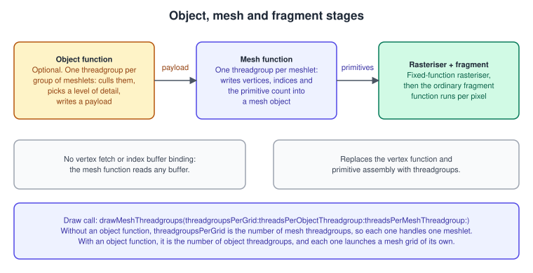
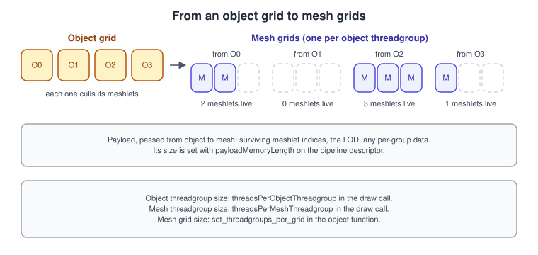
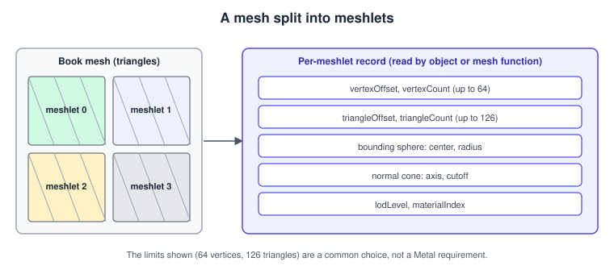
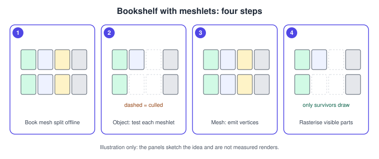

Mesh Shaders
|
This content was generated with the assistance of AI and should be verified against the official documentation before being relied on in production. |
The classic graphics pipeline starts with fixed hardware: a vertex fetch stage reads an index buffer, a vertex function transforms one vertex at a time, and primitive assembly builds triangles. A mesh shader pipeline replaces that front end with two programmable stages that run like compute threadgroups: an optional object function that decides how much work to launch, and a mesh function that writes a small batch of vertices and triangles, a meshlet, straight to the rasteriser. Because the object function can cull and choose levels of detail before a single vertex is processed, mesh shaders are Metal’s tool for amplification and GPU-side geometry decisions, the job that tessellation did before.
The facts were checked in November 2026. The versions documented are Metal 4 (the MTL4* types, available from iOS, iPadOS, macOS,
tvOS and visionOS 26.0) next to the older MTL* types, and Metal Shading Language 4.0 and 4.1 (MTLLanguageVersion.version4_0 from the
26 OSes, version4_1 from the 27 OSes). Mesh pipelines (MTLMeshRenderPipelineDescriptor) are older than Metal 4: they date from iOS 16
and macOS 13 and run on the Metal 3 path too. Apple’s mesh-shader sample requires a Mac on macOS 13 or later or an iOS device with an
A15 or later, and the sample states that it runs only on a physical device because the Simulator does not support mesh shader features; check
supportsFamily and the Metal Feature Set Tables before relying on them. The code is Swift 6 with Xcode 27 on an Apple-silicon Mac.
In the running example, Metal Bookshelf (a multiplatform SwiftUI app hosting an MTKView, with a Metal 4 path and a Metal 3
fallback, plus a visionOS target), this page is the alternative to the ICB culling of
GPU-Driven Rendering and Indirect Command Buffers: the shelf is one static
mesh split into meshlets, and an object function discards the meshlets that are outside the view or facing away. The resource binding
it uses is from Argument Buffers and Bindless Resources. For the older
amplification path see Tessellation; for the same stage in other APIs see
OpenGL mesh shaders and the general discussion in
Advanced Pipeline Stages.
The pipeline

Each stage has a distinct job:
| Stage | Runs | Reads | Writes |
|---|---|---|---|
Object function (optional) |
One threadgroup per object-grid cell; threads cooperate |
Buffers you bind (meshlet records, parameters), threadgroup memory |
A payload in object memory and the size of the mesh grid it launches ( |
Mesh function |
One threadgroup per cell of the mesh grid, so usually one meshlet per threadgroup |
The payload, buffers you bind |
A |
Fragment function |
Per covered pixel, exactly as in the classic pipeline |
The interpolated vertex outputs and per-primitive outputs |
Colour and depth |
There is no input assembler: you decide how the mesh function reads vertex and index data, and any buffer layout works. There is no
vertex buffer binding or MTLVertexDescriptor. Without an object function, the draw call launches mesh threadgroups directly.

Meshlets
A meshlet is a small cluster of triangles with its own local vertex list. Splitting a mesh into meshlets is done at load time or in an asset pipeline. The limits come from the mesh function’s output type (below), and the usual choice is a few dozen vertices and about a hundred triangles per meshlet, so that one mesh threadgroup can write it in a few passes.

Each meshlet carries bounds so that the object function can reject it cheaply:
-
a bounding sphere (centre and radius) for the frustum test;
-
a normal cone (axis and cutoff) so that meshlets whose triangles all face away from the camera are skipped;
-
optionally a level-of-detail index.
The shared header declares the record once for Swift and MSL:
// Added to ShaderTypes.h (see the argument-buffers page for the macros at the top)
struct Meshlet {
uint32_t vertexOffset; // index into meshletVertices
uint32_t vertexCount; // at most 64 here
uint32_t triangleOffset; // index into meshletTriangles (3 bytes per triangle)
uint32_t triangleCount; // at most 126 here
vector_float3 center; // bounding sphere centre
float radius;
vector_float3 coneAxis; // normalised, average triangle normal
float coneCutoff; // 1.0 means "never cull by cone"
};
// Per-draw parameters for the object and mesh functions.
struct MeshParams {
matrix_float4x4 viewProjection;
vector_float4 planes[6]; // frustum planes, normals pointing inside
vector_float3 cameraPosition;
uint32_t meshletCount;
};
// Payload from the object function to the mesh function: up to 32 surviving meshlet indices.
struct MeshPayload {
uint32_t meshletIndices[32];
};Source: MTLMeshRenderPipelineDescriptor
MeshPayload is 128 bytes; the pipeline’s payloadMemoryLength must cover it.
Building meshlets in Swift
A greedy builder walks the triangles in order and closes a meshlet when adding the next triangle would exceed the vertex or triangle limit. Production tools reorder triangles for locality first, which gives tighter bounds; this version is the minimum that works.
import simd
struct MeshletData {
var meshlets: [Meshlet] = []
var vertexIndices: [UInt32] = [] // meshlet-local vertex slot -> index into the vertex buffer
var triangles: [UInt8] = [] // three local indices per triangle
}
func buildMeshlets(positions: [SIMD3<Float>], indices: [UInt32],
maxVertices: Int = 64, maxTriangles: Int = 126) -> MeshletData {
var out = MeshletData()
var local: [UInt32: UInt8] = [:] // vertex index -> local slot
var slots: [UInt32] = []
var tris: [UInt8] = []
var normals: [SIMD3<Float>] = []
func flush() {
guard !tris.isEmpty else { return }
let pts = slots.map { positions[Int($0)] }
let center = pts.reduce(SIMD3<Float>(repeating: 0), +) / Float(pts.count)
let radius = pts.map { simd_distance($0, center) }.max() ?? 0
// Normal cone: the axis is the mean normal; the cutoff is sin of the cone half-angle.
let axis = simd_normalize(normals.reduce(SIMD3<Float>(repeating: 0), +))
let minDot = normals.map { simd_dot($0, axis) }.min() ?? 1
let cutoff: Float = minDot > 0.1 ? (1 - minDot * minDot).squareRoot() : 1
out.meshlets.append(Meshlet(vertexOffset: UInt32(out.vertexIndices.count),
vertexCount: UInt32(slots.count),
triangleOffset: UInt32(out.triangles.count),
triangleCount: UInt32(tris.count / 3),
center: center, radius: radius,
coneAxis: axis.x.isNaN ? SIMD3<Float>(0, 1, 0) : axis,
coneCutoff: cutoff))
out.vertexIndices += slots
out.triangles += tris
local.removeAll(keepingCapacity: true)
slots.removeAll(keepingCapacity: true)
tris.removeAll(keepingCapacity: true)
normals.removeAll(keepingCapacity: true)
}
for t in stride(from: 0, to: indices.count, by: 3) {
let tri = [indices[t], indices[t + 1], indices[t + 2]]
let newVertices = tri.filter { local[$0] == nil }.count
if slots.count + newVertices > maxVertices || tris.count / 3 + 1 > maxTriangles { flush() }
for v in tri {
if local[v] == nil { local[v] = UInt8(slots.count); slots.append(v) }
tris.append(local[v]!)
}
let p0 = positions[Int(tri[0])], p1 = positions[Int(tri[1])], p2 = positions[Int(tri[2])]
normals.append(simd_normalize(simd_cross(p1 - p0, p2 - p0))) // counter-clockwise front faces
}
flush()
return out
}Source: MTLMeshRenderPipelineDescriptor
The winding assumption matters: the normal comes from a counter-clockwise triangle, so the render encoder must use
setFrontFacing(.counterClockwise) (Metal’s default front face is clockwise).
The shaders
Object function
One object threadgroup tests up to 32 meshlets, one per thread, collects the survivors in the payload and launches a mesh grid with one mesh threadgroup per survivor.
#include <metal_stdlib>
#include "ShaderTypes.h"
using namespace metal;
static bool meshletVisible(constant MeshParams &p, Meshlet m)
{
// 1. Frustum: the bounding sphere must not be fully behind any plane.
for (uint i = 0; i < 6; ++i) {
if (dot(p.planes[i].xyz, m.center) + p.planes[i].w < -m.radius) { return false; }
}
// 2. Cone: if the camera sees only the back of all triangles, skip the meshlet.
float3 toMeshlet = m.center - p.cameraPosition;
float dist = length(toMeshlet);
if (dot(toMeshlet / dist, m.coneAxis) >= m.coneCutoff + m.radius / dist) { return false; }
return true;
}
[[object]]
void bookObject(object_data MeshPayload &payload [[payload]],
mesh_grid_properties grid,
uint tid [[thread_index_in_threadgroup]],
uint group [[threadgroup_position_in_grid]],
device const Meshlet *meshlets [[buffer(0)]],
constant MeshParams ¶ms [[buffer(1)]])
{
threadgroup atomic_uint visibleCount;
if (tid == 0) { atomic_store_explicit(&visibleCount, 0u, memory_order_relaxed); }
threadgroup_barrier(mem_flags::mem_threadgroup);
uint index = group * 32 + tid;
if (index < params.meshletCount && meshletVisible(params, meshlets[index])) {
uint slot = atomic_fetch_add_explicit(&visibleCount, 1u, memory_order_relaxed);
payload.meshletIndices[slot] = index;
}
threadgroup_barrier(mem_flags::mem_threadgroup);
if (tid == 0) {
uint n = atomic_load_explicit(&visibleCount, memory_order_relaxed);
grid.set_threadgroups_per_grid(uint3(n, 1, 1)); // n may be 0: nothing launches
}
}Rules visible in this function:
-
The payload is the only way to hand data to the mesh stage; it lives in object memory and is written by the threads of the object threadgroup.
-
mesh_grid_propertiescarries the grid size.set_threadgroups_per_grid(uint3)is called once per threadgroup (here by thread 0 after a barrier). Setting it to zero launches no mesh threadgroup, which is how an object function culls a whole group. -
Threadgroup memory works as in compute kernels, so atomics and
threadgroup_barrierare available. The payload order is not deterministic when atomics are used; if draw order matters, compact with a prefix sum instead.
Mesh function
One mesh threadgroup writes one meshlet. Its threads share the work of copying vertices and triangles.
struct VertexOut {
float4 position [[position]];
float3 normal;
float2 uv;
};
// At most 64 vertices and 126 triangles per meshlet, triangle topology, no per-primitive outputs.
using BookMesh = metal::mesh<VertexOut, void, 64, 126, metal::topology::triangle>;
struct Vertex { float3 position; float3 normal; float2 uv; };
[[mesh]]
void bookMesh(BookMesh output,
const object_data MeshPayload &payload [[payload]],
uint tid [[thread_index_in_threadgroup]],
uint group [[threadgroup_position_in_grid]],
device const Meshlet *meshlets [[buffer(0)]],
constant MeshParams ¶ms [[buffer(1)]],
device const Vertex *vertices [[buffer(2)]],
device const uint *meshletVertices [[buffer(3)]],
device const uchar *meshletTriangles [[buffer(4)]])
{
Meshlet m = meshlets[payload.meshletIndices[group]];
if (tid == 0) { output.set_primitive_count(m.triangleCount); }
for (uint v = tid; v < m.vertexCount; v += 128) {
Vertex src = vertices[meshletVertices[m.vertexOffset + v]];
VertexOut o;
o.position = params.viewProjection * float4(src.position, 1.0);
o.normal = src.normal;
o.uv = src.uv;
output.set_vertex(v, o);
}
for (uint t = tid; t < m.triangleCount; t += 128) {
uint base = m.triangleOffset + t * 3;
output.set_index(t * 3 + 0, meshletTriangles[base + 0]);
output.set_index(t * 3 + 1, meshletTriangles[base + 1]);
output.set_index(t * 3 + 2, meshletTriangles[base + 2]);
}
}
fragment float4 bookMeshFragment(VertexOut in [[stage_in]])
{
float3 n = normalize(in.normal);
float lamp = saturate(dot(n, normalize(float3(0.3, 1.0, 0.4))));
return float4(float3(0.75, 0.55, 0.35) * (0.2 + 0.8 * lamp), 1.0);
}How the mesh output works:
-
metal::mesh<V, P, NV, NP, topology>declares the output object:Vis the per-vertex structure (it must contain the[[position]]member),Pthe per-primitive structure (voidfor none),NVandNPthe maximum numbers of vertices and primitives, and the topology (point,lineortriangle). -
set_primitive_count(n)must be called (by one thread) with a count not aboveNP;set_vertex(i, v)writes vertexi;set_index(i, idx)writes thei-th index, three per triangle. -
The threads in the threadgroup loop with a stride equal to the threadgroup size, so any threadgroup size from 1 up to the pipeline limit gives a correct result; the size passed at the draw call (128 here) must match the stride in the code.
-
Fragment inputs use the vertex output type through
[[stage_in]], exactly as in the classic pipeline. A non-voidPadds per-primitive values that reach the fragment function without interpolation.
Pipeline state
MTLMeshRenderPipelineDescriptor configures the three functions and the limits. The descriptor properties include objectFunction,
meshFunction, fragmentFunction, payloadMemoryLength, maxTotalThreadsPerObjectThreadgroup, maxTotalThreadsPerMeshThreadgroup,
maxTotalThreadgroupsPerMeshGrid, requiredThreadsPerObjectThreadgroup, requiredThreadsPerMeshThreadgroup,
objectThreadgroupSizeIsMultipleOfThreadExecutionWidth, meshThreadgroupSizeIsMultipleOfThreadExecutionWidth, objectBuffers, meshBuffers,
fragmentBuffers (mutability of buffer slots), rasterSampleCount, isRasterizationEnabled, supportIndirectCommandBuffers,
maxVertexAmplificationCount, the colour, depth and stencil formats, and binaryArchives.
import Metal
func makeBookMeshPipeline(device: MTLDevice, library: MTLLibrary,
colorFormat: MTLPixelFormat) throws -> MTLRenderPipelineState {
let d = MTLMeshRenderPipelineDescriptor()
d.label = "Book meshlets"
d.objectFunction = library.makeFunction(name: "bookObject")
d.meshFunction = library.makeFunction(name: "bookMesh")
d.fragmentFunction = library.makeFunction(name: "bookMeshFragment")
d.colorAttachments[0].pixelFormat = colorFormat
d.depthAttachmentPixelFormat = .depth32Float
d.payloadMemoryLength = MemoryLayout<MeshPayload>.stride // 128 bytes
d.maxTotalThreadsPerObjectThreadgroup = 32
d.maxTotalThreadsPerMeshThreadgroup = 128
d.objectThreadgroupSizeIsMultipleOfThreadExecutionWidth = true
d.meshThreadgroupSizeIsMultipleOfThreadExecutionWidth = true
let (pipeline, _) = try device.makeRenderPipelineState(descriptor: d, options: [])
return pipeline
}Source: MTLMeshRenderPipelineDescriptor
The pipeline state exposes the limits that apply: maxTotalThreadsPerObjectThreadgroup, maxTotalThreadsPerMeshThreadgroup,
maxTotalThreadgroupsPerMeshGrid, objectThreadExecutionWidth and meshThreadExecutionWidth. Read them after creation and clamp
your draw-call sizes to them instead of assuming a number. Metal 4 also provides MTL4MeshRenderPipelineDescriptor, which is compiled through
an MTL4Compiler (see Shader Compilation and Pipeline Caching);
the classic descriptor above is usable with Metal 4 encoders.
Drawing
On the Metal 4 path the buffers are bound with an argument table for the object, mesh and fragment stages. The indices in the table are shared by all bound stages, which is why the shaders above use different indices for different buffers.
func encodeBookMeshDraw(encoder: MTL4RenderCommandEncoder,
pipeline: MTLRenderPipelineState,
table: MTL4ArgumentTable,
meshletBuffer: MTLBuffer, paramsBuffer: MTLBuffer,
vertexBuffer: MTLBuffer, vertexIndexBuffer: MTLBuffer,
triangleBuffer: MTLBuffer, meshletCount: Int) {
encoder.setRenderPipelineState(pipeline)
encoder.setFrontFacing(.counterClockwise)
encoder.setCullMode(.back)
table.setAddress(meshletBuffer.gpuAddress, index: 0)
table.setAddress(paramsBuffer.gpuAddress, index: 1)
table.setAddress(vertexBuffer.gpuAddress, index: 2)
table.setAddress(vertexIndexBuffer.gpuAddress, index: 3)
table.setAddress(triangleBuffer.gpuAddress, index: 4)
encoder.setArgumentTable(table, stages: [.object, .mesh])
let objectGroups = (meshletCount + 31) / 32 // 32 meshlets per object threadgroup
encoder.drawMeshThreadgroups(threadgroupsPerGrid: MTLSize(width: objectGroups, height: 1, depth: 1),
threadsPerObjectThreadgroup: MTLSize(width: 32, height: 1, depth: 1),
threadsPerMeshThreadgroup: MTLSize(width: 128, height: 1, depth: 1))
}Source: MTL4RenderCommandEncoder
The draw calls available on the render encoders:
| Call | Meaning |
|---|---|
|
The grid is given in threadgroups. With an object function it is the object grid; without one, it is the mesh grid. |
|
The grid is given in threads, and Metal rounds up to whole threadgroups. |
|
The grid size comes from a buffer written by the GPU (on |
On the Metal 3 path, the classic encoder is used with the mesh-specific bind calls:
func encodeBookMeshDrawMetal3(encoder: MTLRenderCommandEncoder, pipeline: MTLRenderPipelineState,
meshletBuffer: MTLBuffer, paramsBuffer: MTLBuffer,
vertexBuffer: MTLBuffer, vertexIndexBuffer: MTLBuffer,
triangleBuffer: MTLBuffer, meshletCount: Int) {
encoder.setRenderPipelineState(pipeline)
encoder.setFrontFacing(.counterClockwise)
encoder.setCullMode(.back)
encoder.setObjectBuffer(meshletBuffer, offset: 0, index: 0)
encoder.setObjectBuffer(paramsBuffer, offset: 0, index: 1)
encoder.setMeshBuffer(meshletBuffer, offset: 0, index: 0)
encoder.setMeshBuffer(paramsBuffer, offset: 0, index: 1)
encoder.setMeshBuffer(vertexBuffer, offset: 0, index: 2)
encoder.setMeshBuffer(vertexIndexBuffer, offset: 0, index: 3)
encoder.setMeshBuffer(triangleBuffer, offset: 0, index: 4)
let objectGroups = (meshletCount + 31) / 32
encoder.drawMeshThreadgroups(MTLSize(width: objectGroups, height: 1, depth: 1),
threadsPerObjectThreadgroup: MTLSize(width: 32, height: 1, depth: 1),
threadsPerMeshThreadgroup: MTLSize(width: 128, height: 1, depth: 1))
}Source: MTLRenderCommandEncoder
On both paths, buffers that the object and mesh stages read must be resident (a residency set or useResource), and
setObjectThreadgroupMemoryLength(_:index:) sets the length of any extra threadgroup memory the object function declares.

Mesh shaders compared with the alternatives
| Technique | Strength | Weakness |
|---|---|---|
Classic vertex pipeline with an indirect draw |
Simplest, the widest hardware support |
No per-cluster culling or level-of-detail inside one draw |
ICB with GPU culling (previous page) |
Whole-object culling, different draws per object |
Granularity is a draw, not a cluster |
Tessellation |
Smooth displacement of patches |
Fixed-function expansion; absent from the Metal 4 render encoder (it has no tessellation configuration methods); see Tessellation |
Mesh shaders |
Cluster culling, level of detail and procedural geometry in one programmable front end |
Requires meshlet data and supported hardware |
Mesh shading also removes the vertex-amplification detour for some uses: a mesh function can emit geometry directly, for example
the dust sprites or the book spines of the running example, without a vertex buffer. maxVertexAmplificationCount on the descriptor
remains for rendering one pass to several views (visionOS, see Metal on visionOS).
Common mistakes
-
Output limits exceeded. Writing more vertices or primitives than the
mesh<...>type declares, or callingset_primitive_countwith a number above the maximum, is undefined behaviour. Turn on shader validation while developing. -
Mismatched threadgroup sizes. The stride in the loops must equal the
threadsPerMeshThreadgroupof the draw call, and the draw call must not exceedmaxTotalThreadsPerMeshThreadgroup. -
No barrier before reading object memory. The payload is written by several threads; synchronise before thread 0 reads the count.
-
Forgetting that
set_threadgroups_per_gridis per object threadgroup. Every object threadgroup must call it exactly as intended; threadgroups that never call it launch nothing. -
Payload too small.
payloadMemoryLengthmust be at least the payload structure’s size. -
Winding and culling mismatch. A normal cone built from counter-clockwise triangles culls the wrong side if the encoder uses the default clockwise front face.
-
Assuming Simulator support. Apple’s sample states that the Simulator does not support mesh shader features; test on a device or a Mac.
-
Binding the same index for two stages by accident. With a Metal 4 argument table shared by several stages, an index means one buffer for all of them.
Performance notes
-
Keep meshlets small enough to stay in registers and threadgroup memory but large enough to amortise the launch; the 64-vertex, 126-triangle shape used here is a common starting point, and the right size depends on the GPU, so measure.
-
Order triangles for locality before building meshlets: tighter bounds cull more.
-
Let the object function do cheap tests first (sphere, then cone) and keep its threadgroup size a multiple of the execution width.
-
Avoid writing payload entries you do not need; a smaller payload reduces object-to-mesh traffic.
-
For small objects, a classic draw can be faster. Use mesh shaders where per-cluster decisions pay for themselves.
-
Capture a frame and inspect the object, mesh and fragment stages separately (see Debugging and Profiling).
What changed recently
| Version | Change |
|---|---|
iOS 16, macOS 13 (2022) |
|
26 OSes (2025) |
Metal 4: |
27 OSes (2026) |
MSL 4.1 is available as |
Where the books are outdated
Metal by Tutorials (4th edition, written for Metal 3) teaches amplification through tessellation in its chapter 19 and only mentions
mesh shaders; the pipeline above is the current route for amplification and cluster culling, and on Metal 4 tessellation is not
configured on the new render encoder. Metal Programming Guide (2017) covers tessellation in chapter 14 for Metal 2 and Swift 4, long before
mesh shaders existed; its device.newDefaultLibrary() is makeDefaultLibrary() today.
References
-
MTLMeshRenderPipelineDescriptor: https://developer.apple.com/documentation/metal/mtlmeshrenderpipelinedescriptor
-
MTL4MeshRenderPipelineDescriptor: https://developer.apple.com/documentation/metal/mtl4meshrenderpipelinedescriptor
-
MTL4RenderCommandEncoder: https://developer.apple.com/documentation/metal/mtl4rendercommandencoder
-
MTLRenderCommandEncoder: https://developer.apple.com/documentation/metal/mtlrendercommandencoder
-
MTLRenderPipelineState: https://developer.apple.com/documentation/metal/mtlrenderpipelinestate
-
Adjusting the level of detail using Metal mesh shaders: https://developer.apple.com/documentation/metal/adjusting-the-level-of-detail-using-metal-mesh-shaders
-
Understanding the Metal 4 core API: https://developer.apple.com/documentation/metal/understanding-the-metal-4-core-api
-
Metal Shading Language specification: https://developer.apple.com/metal/Metal-Shading-Language-Specification.pdf
-
Metal Feature Set Tables: https://developer.apple.com/metal/Metal-Feature-Set-Tables.pdf
-
Metal by Tutorials (Kodeco): https://www.kodeco.com/books/metal-by-tutorials
-
Metal Programming Guide (InformIT): https://www.informit.com/store/metal-programming-guide-tutorial-and-reference-via-9780134668949